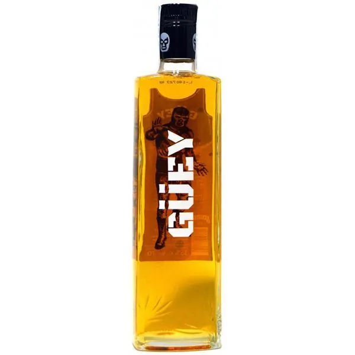
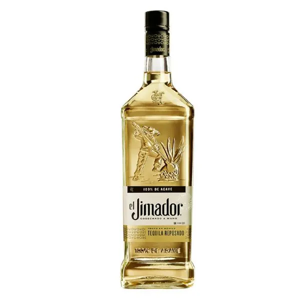

Güey Hot Spicydesde 17,01 € IVA incluido
Inicio / La tienda / Tequila Reserva Don Julio Reposado Botella 70CL

El Tequila Don Julio Reposado es un tequila color ámbar dorado, añejado ocho meses en barriles de roble. Su sabor es suave y acogedor, elaborado 100% agave azul. Es un tequila excepcional con la garantía de Destilarías Don Julio desde 1942.
Tequila Reserva Don Julio Reposado Botella 70CL
El Tequila Reserva Don Julio Reposado Botella 70CL es un tequila de color ámbar dorado y que ha sido envejecido en barricas de roble blanco americano durante ocho meses. Es perfecto para tomarlo frío con hielo o como parte de cócteles refrescantes.
Nota de cata
Vista: ámbar dorado.
Nariz: aromas de cítricos con ligero matiz a chocolate.
Boca: suave, sabroso y dócil.
El tequila
El tequila es la bebida más característica de México, es originaria de Tequila, pueblo perteneciente al estado de Jalisco y se elabora mediante la fermentación y destilado del jugo del agave azul, este tiene denominación de origen en cinco estados dentro de México (Guanajuato, Michoacán, Nayarit, Tamaulipas y Jalisco).
La pureza de un tequila se establece según la proporción de agave en su composición, cuanto mayor sea el porcentaje de agave, mejor y más puro se considera el tequila.
La Fermentación: es la fase del proceso por el cual los azúcares presentes en los mostos se transforman en alcohol etílico y bióxido de carbono. En la fermentación también se forman otros compuestos que definirán las características finales de la bebida.
Destilación: finalizada la fermentación, los mostos se llevan a destilar, este es un proceso que consiste en la separación de los constituyentes del mosto. La destilación alcohólica se basa en que alcohol etílico es más ligero que el agua, así que se evapora a una temperatura más baja, los vapores se condesan y se convierten en un líquido con un alto contenido de alcohol. La destilación se lleva a cabo normalmente en alambiques y consta de dos fases. El producto obtenido de este primer ciclo se conoce como producto ordinario y en esta fase se eliminan componentes inservibles nombrados vinazas. El producto ordinario ya obtenido se somete a un segundo ciclo o fase de corrección para obtener finalmente el tequila.
Información adicional
Graduación alcohólica: 38° Vol.
Capacidad: Botella de 70 cl.
¿Varias unidades? Para envíos a la península por palé de varias unidades, consúltanos en el 611 433 507.

Güey Hot Spicy Tequila Casa Dragones Botella 70CL
Tequila Casa Dragones Botella 70CL

El Jimador Reposado Sauza Blanco
Sauza Blanco